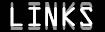

<リンクはフリーです。ご自由にどうぞ。相互リンク希望の場合は、その旨ご一報ください。>
-web master-
NOB−JURASSIC JADE
-bands-
ABLAZE 佐賀メロディックデスメタル
ADDICT FROM THE MIND life is wonderful but agony
AMUZA UNDER GROUND GOTHIC HEAVY CORE
ＡRDEN Baron ArdenことG.Suzuki氏率いるARDENのサイト。GASTUNKのページも有り
ARGUMENT SOUL 名古屋発・正統派TRUE POWER METALの雄
AUTO-MOD 公式サイト「EESTANIA 2000」。時代を超越した、狂気のAUTO-MODワールドへ…
Because They Know極悪ポジティブを標榜するHARD COREバンド
BUZZ CULT大砲のお由美さん率いるLOUD AND DEATH THRASHバンド
CATAPPLEXY NO PEACE PLAY WAR、UNHOLY APOCALYPTIC BLACK METAL
チャクラ PSYCHEDELIC！TRANCE！SPACE！LOUD！PEACE！ROCK!!!!!!! 独特な空間にクラクラします
CUT THE CRAP 複雑な楽曲を激情的に演奏するバンド
CHOKE佐賀を拠点に活動するデスラッシュバンド
CORAL No Limits・・・ No End・・・!! NEW THRASH METAL
DAZZLE ライヴで凄まじいテンションの高さを見せる、INDUSTRIAL
THRASH GROOVE
DECRYPT一歩先ゆく音の表現！不思議！美！音楽
DEFILED 国内外を問わずアトラクティヴな活動を続ける、BRUTAL
DEATH METAL
DESORATOR アグレッシヴな札幌のDEATH METAL
DIE TRENDS 仙台のRaging Thrash Hardcore
DIE YOU BASTARD! BLAST!!! BLAST!!! BLAST!!!
DOORMAT 「靴の汚れを拭う玄関敷と同様、皆が我らを通じ心の汚れ、ストレスを拭って欲しい」
DIRTY THIRTY old School thrash metal rules,bang that head,that doesn't bang!!
DROWNED MIND 自称大阪バカロックバンド・爆走サウンド全開！
エロ童子 京都のアヴァンギャルド・ネイキッド・パンク
ETERNAL ELYSIUM DOOMYかつHEAVYな妖気は、唯一無二
43URBAN神戸を拠点に活動中のビートダウンスタイル・ハードコア・バンド
FROM MY SOUL THRASHING HARDCORE
FUJITA"Mr.CBGB"TAKASHI 「REAL GUITAR AND REAL SOUND」 藤田君（DOOM/Jのギターリスト）のオフィシャルサイト
GARLIC BOYS 2005年成人式を迎えます。いわずと知れた！
GENOCIDE 福井の重鎮 竹内氏いわく「常に呪われたバンド」
G.G ライブはいつも裸祭り！女性ツインＶｏ．”Ｐ−ＭＥＴＡＬ”バンド
GIGATON SUPER HIGH SPEED DEATH THRASH ATTACK
GOOFYSTYLE ASIAN SOUL ACID GROOVE!!!
Ghost Cries 「激情と、灰色の涙」ADDICT XX(2010．01.10)で共演。（←NEW!!!）
GOTHIC LOGIC我！音楽の世界に身を浸せば、今宵も深い陶酔に沈み行く。破壊･幻想･妄想･怒り‥‥‥‥心の波動を呼び覚まし、肉体の彼方で踊り明かす。
五人一首複雑怪奇な構成と神秘的旋律が存在する世界を、まるで紙芝居のように五人で織りなす、デスサウンドとプログレッシブロックの融合を目指す重低音バンド
GRIM FORCE 666% PURE THRASHING MAD !!!
GUM-TEZI 恒例イベント「激昂」も絶好調な、爆裂暴走ロック
ホル☆モン 浜松市に活動拠点を置く、自称ミクスチャーバンド
inchworm次世代ラウドロック
JABBER WOCK 横浜Heavy Mixture Team
JACK OFF GUYS HOOLIGANS SPIRITを標榜する、コアでスラッシーなバンド
JET FIELD 兵庫県で結成した反則的ﾊｰﾄﾞｺｱ
JEWEL かのJEWELがHPにて復活！？ VoのWANT YOU大森氏によるサイト
KAMINARI THE LOUDMASTER TOKYO・稲妻猛攻撃!!
Karma Chain 京都の「胸がキュンロック」
ＫＩＮＧ ＧＯＢＬＩＮ 重〜い音を出すアバンギャルドなロックトリオ
KOH MOROTA 故・諸田コウ氏の足跡をたどるサイト「in memory
of Koh Morota」です。ぜひ一度訪れてください
凶音 独創的な黄泉メタルサウンドを構築している凶音(MAGANE)のサイト
MANIPULATED SLAVES 「男泣きガッツメタル」from大阪
MASTERMIND 高速ツインリードを誇る、東京のメロディック・パワーメタルバンド
MAVERICK 札幌が誇るストロングスタイルHEAVY METALバンド
MEPHISTOPHELES 2007活動再開
MxIxG 自称Ｄ級トラッシュメタルフロム西東京、スローガンは「無差別勃起」!!
鯰 ヘヴィメタルをこよなく愛し、ブルータルかつスラッシーな音圧、そして王道でもモダンでも無いオリジナルを目指すバンド
naqro 名古屋の元気一杯！ツインVo.を擁したメタルコア
NECRONOMICON 福岡を拠点とする、ブルータルなDEATH METALバンド
ニンゲンカクセイキ 未来ミライ・過去カコ・現在イマ、人々のドラマ 轟音にのせて失格人間が叫ぶ！
NO MERCY男臭く、パワー溢れるハードコア・サウンドを轟かせる、神戸の重鎮
NO MORE PAIN HEAVYでAGGRESSIVEな音を追求するバンド
MOUSE PIECE 千葉 柏No.１ヘヴィサウンド!!
OGRE 究極の超速を誇る、爆重低音バンド
ORANGE 宇都宮を拠点とする、ハンパなく気合の入ったメタリック・コア
OUTBURST 切れ味鋭いスラッシュメタルバンド
OUTRAGE ２０周年おめでとう！
PENANCE IN SELF RESPECT 横須賀かぼちゃ屋キヨさん率いるヘヴィーロックバンド
Q
QP-CRAZY 地獄逝きだよ！出発進行!!
RAGING FURY 大阪METALシーンを支え続ける鋼鉄神
RDX ex.NEGAROBOのあんぱん氏<Dr>擁する、超スラッシュメタル・バンド
RIGHTBRAIN 三河ビンテージスラッシュメタルバンド
RIGOR MORTIS 元バイオスロート杉原君のバンド the 80s'true thrash
輪廻ノ蛇 京都のベースレス２ピース編成、ロックンロール・ショートカット・グラインドコア
RIVERGE 復活おめでとう!!
ROSE ROSE SKULL THRASH ZONE VOLUME 1からの仲間
SABAZZ 企画ギグ「THRASH SANCTUARY」主宰の、MASTER
OF SPEED DEATH THRASH
SADISTIC EYES ex.RAGING FURYのトオル氏<G,Vo>のNew
Band。要注目！
坂本英三 ex.ANTHEM〜練馬マッチョマン〜ANIMETALの“はぐれメタル絶叫派”ヴォーカリスト
ＳＣＨＯＰＦＥＲ お馴染みダイマ☆マン率いるブルータル・デスメタル・バンド
戦艦 Gunship666 世界一重い鉄の塊 戦艦Gunship666!!
SHADY GLIMPSE 浜松が誇るHARD CROSSOVER THRASHバンドＶＡＣＵＵＭがメンバーチエンジ＆新譜リリースに伴い改名
SHELL SHOCK 再始動!!（←NEW!!!）
SIGH もはやDEATH/BLACK METALというカテゴリーのみでは語れない、驚愕のサウンド
SILVER BACK アグレッシヴ・ドラマティックサウンド・HMバンド、SILVER
BACKのオフィシャル・サイト
SLITER 名古屋釘打重金属楽団
SOLAR PLEXUS 名古屋発、ミゾオチに突き刺さる怒涛のパラメタＢＡＮＤ！
SONIC AGITATION ベイエリア・スラッシュをベースに新たな要素を織り交ぜた、極上のモダンヘヴィネス・サウンドを聴け！
Sound of Silence 略せばS.O.S！暗く哀しくを訴えるへヴィロックバンド
SQID THE COMPLETE ANGER!!異種格闘技的ヘヴィロックバンド
STONE EDGE THIN LIZZY・JOHN SYKESを敬愛してやまないギターリストJIRO氏率いるメロディアスヘビーメタル・ハードロックバンド
SUBHUMANRACE ジャンルは「北斗の拳」”気持ちだけは負けません。メタルの中のメタルです。”ｂy元DAZZLEけんちゃん
SUNS OWL ヘヴィーロック日本代表
SURVIVE ex.DEATH FILEの根元氏<G&Vo>率いるSURVIVEのサイト
TASTE 杜の都仙台が誇る絡みつくヘヴィネス
TERA ACBL 房総発・激速スラッシュコア
TERROR SQUADTHE REAL THRASH METAL as a pride of Japan!!!
THORN We Are THORN !!!!!!!!!
TOP SECRET Rough ,Tough そしてHeavyをキーワードに仙台を拠点に活動しているトリオ
UNALIE 痙攣的な激しさと切ない程の叙情性を表現するバンド
UNITED 日本スラッシュ界の重鎮
USE MY THERD arm 茨城産・激しい演奏に美メロとギター和音の美しい響きが!!
VIGILANTE HYPER-PROGRESSIVE POWER METAL
VIO SYSTEM DIVIDE名古屋の暴力分割装置？ハイブリッド・メタルバンド
VOIDD愛だの恋だの歌えません。歌うは、人生と車と骸骨のみ！
夜叉 ケタ違いの迫力を放つ、言わずと知れた目黒の鬼神
WANAZONO マッキー＆ダッチ率いるアバンギャルドなロックバンド
666 1985〜1988を駆け抜けたスラッシュメタルトリオ
暫（ざん） JURASSIC JADE元メンバーKURO参加のオヤジバンド
-live house-
吉祥寺クレッシェンド ヘヴィなバンドを集めた企画が盛況。10/10リニューアル
CLUB HAVANA 八王子のHOTなライブハウス
ＫＥＮＴ 宇都宮に新しくオープンしたライヴハウス、「KENT」のサイト
THE LIVE STATION いつもお世話になってます。目黒LIVE STATION（ライヴハウス）のサイト
URGA 新宿のCOOLなライヴハウス、URGA（ウルガ）のサイト
-labels-
Bang The Head Records(B.T.H.RECORDS) DISK UNION・HEAVY METAL 専門レーベル
HOWLING BULL HOME PAGE 所属バンドの情報やEAT magazine、SHOPやグッズの紹介など、内容盛りだくさん
S.M.D records 大阪の毘盧釈那が在籍し、また国内外のバンドをリリースしていくレーベル
WORLDCHAOS PRODUCTION Far East Extream Music Factory
UNDERWORLD PRODUCTION rigor mortis 杉原君が運営してる
UNDERGROUND EXTREME METAL DISTRIBUTION LABEL
-others-
(web-zine,shops,friends,etc)
あ血ゃみのお部屋 佐賀在住！麻美さんのオススメLIVE情報・LIVEレポ
ぼあな、 ライブも掲示板も常連のさるさんのお気に入りバンド応援/紹介ページ
DARKNESS.TO 専用サーチエンジンを含む、エクストリーム・ミュージック総合サイト
DISK UNION JURASSIC JADEのCDを扱って下さっているディスクユニオンさんのメタル系専門サイト。ヘヴィメタルからメタリック･ハードコアまで、入荷情報や業界ニュース等を毎日更新！
ESP Guitar PRODUCTS !!! JURASSIC JADE NOB&GEORGEもサポートを受けてます
EXTREME AGGRESSION KREATORファンのMIKEさんのサイト。JURASSIC JADEのコーナーもアリ
ガブリエルのHome Sweet HOME PAGE ライブ・掲示板の超常連 フジイコウジさんのサイト。
HR/HM Search HR/HM好きな方々の為のHR/HMな検索エンジン
JAPAN METAL INDIES 国内HR/HMに愛情たっぷりのサイト。（←NEW!!!）
KABBALA 国内のメタルシーンを誠意を持って応援しているファンジンのサイト。
倩兮女―ケラケラヲンナ― 酔う子さんのサイト。楽しいイヴェント情報などもアリ
恋かいこ 記ス『雑我人生逸我道』（That's My Life. It's My Way.)心に届かないものは一刀両断。厳しさを伴った愛情に母性を感じます。恋かいこさんのHP。
MAKI'S PAGE JURASSIC JADEの友人＆常連さん、牧野さんのサイト。オリジナル曲も聴ける!!
METAL INSIDE アンダーグラウンド・シーンを支えつづける山口サトシ氏の情報サイト。最新ニュース満載！
MIKE'S CHARA-FREAK MIKEさんのもうひとつのサイト。ポスペ、テレタビーズなどのキャラクター好きな人は要check
NO-REMORSE Online Extreme Music Wear Shop
PEACE MAKER 国内外のヘヴィロック系アーティストが愛用するストリートブランド“PEACE MAKER”のオフシャル・サイト
パンク・リンク 色々なバンドの、オフィシャル・サイトを集めたリンク集
PURE ROCK JAPAN 日本のHR/HMシーンをサポートするWeb Magazine。JURASSIC
JADEのロングインタビューは超必見
ROOTS 仙台でイベント企画してるROOTSさんのホームページ
SARASVATY 北海道のマイヤーさんのサイト。音楽のほか、占い、TATTO、ボディ・ピアスなどコンテンツ充実
さりぞうの星 牧野さんと同じくJURASSIC JADEの常連さん、サリーさんのページ。新譜の“いつか…(A
Requiem For K)”ではステキな歌とギターを披露してます
SKULLWORKESS Lights Out RECORDSがプロデュースするブランド
STIGMATA 栃木の番茶さんのサイト。ARCH ENEMYファンは、必ず訪れるべし
STUDIO OZ GEORGE番長が仕切ります！茨城県南最強のぐうたら音楽スタジオ。JURASSIC JADEの新曲はここで産まれます。
THE JAP HARDCOREPUNK HOMEPAGE WEB MASTER 「これはハードコアパンクだ」(主にGAUZE及び消毒GIG出演バンド)紹介サイト
Third Stage/Mandrake Root HR/HM&ヴィジュアル系ロック専門店。JURASSIC JADEも結成当時からお世話になっています。
VIVA!MEXICO!! gxbxさんの「from mexico,マスク・ド・グラインドスラッシャーBOBOBRAZIL UN-OFFICIAL
FANSITE｣
８０'ｓ metal mania めたやんさんの徹底的メタルこだわりサイト
BACK TO